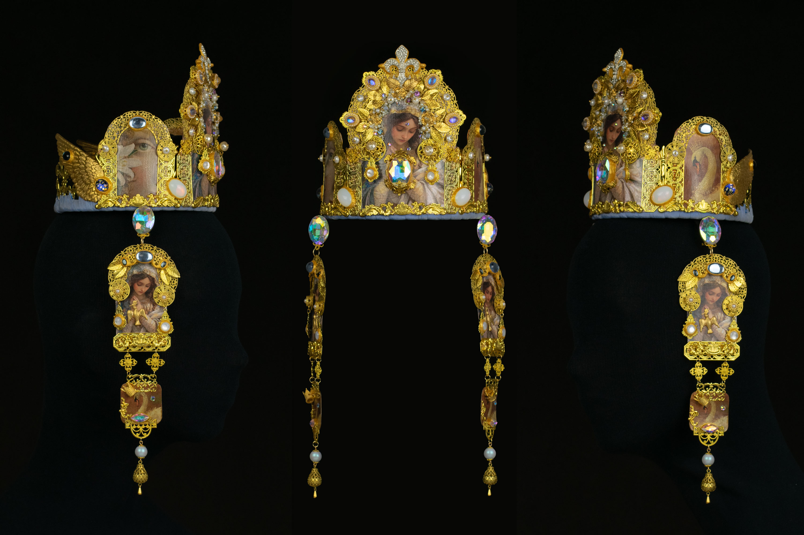
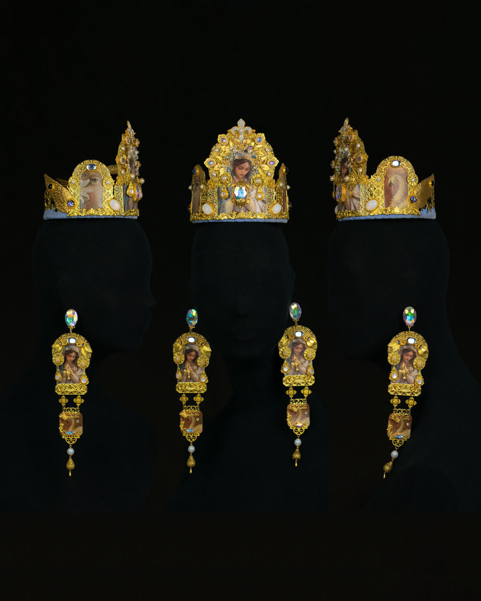
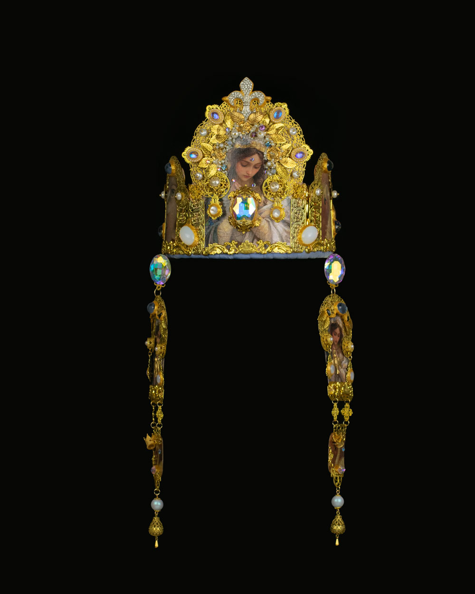
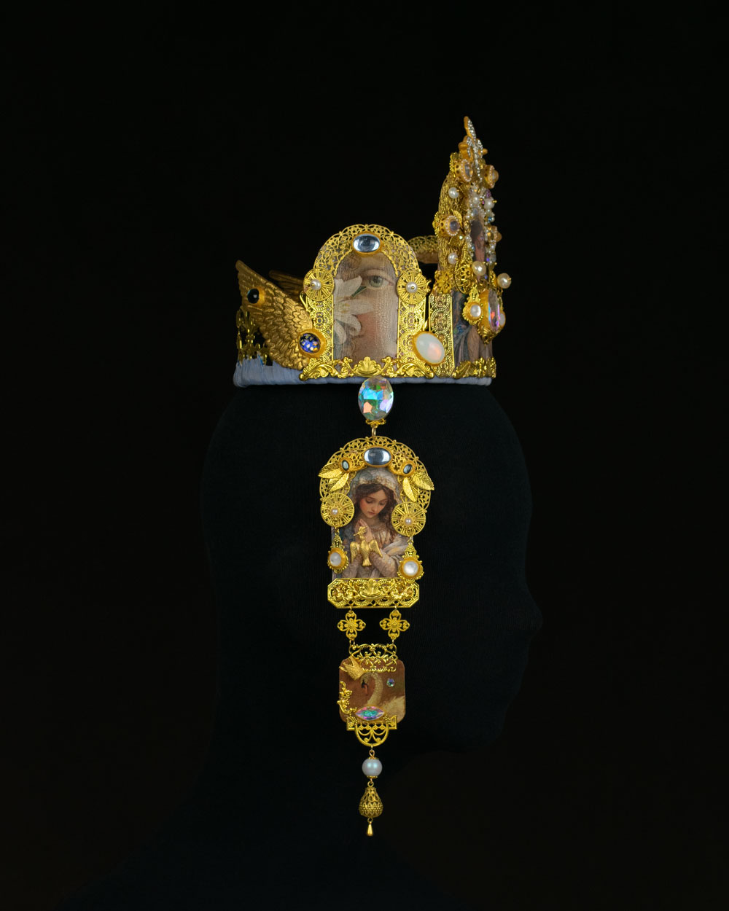
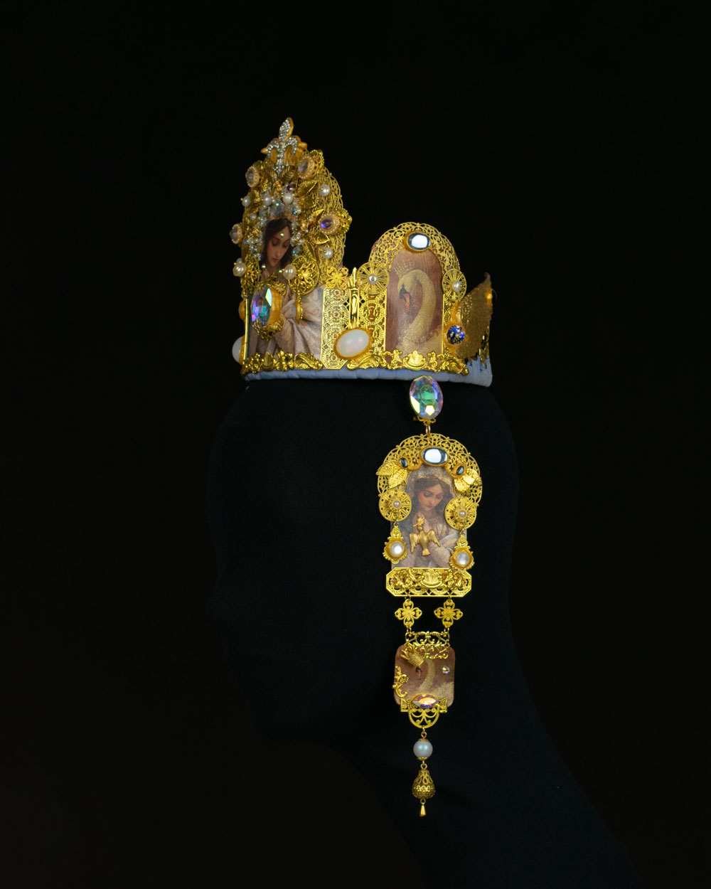
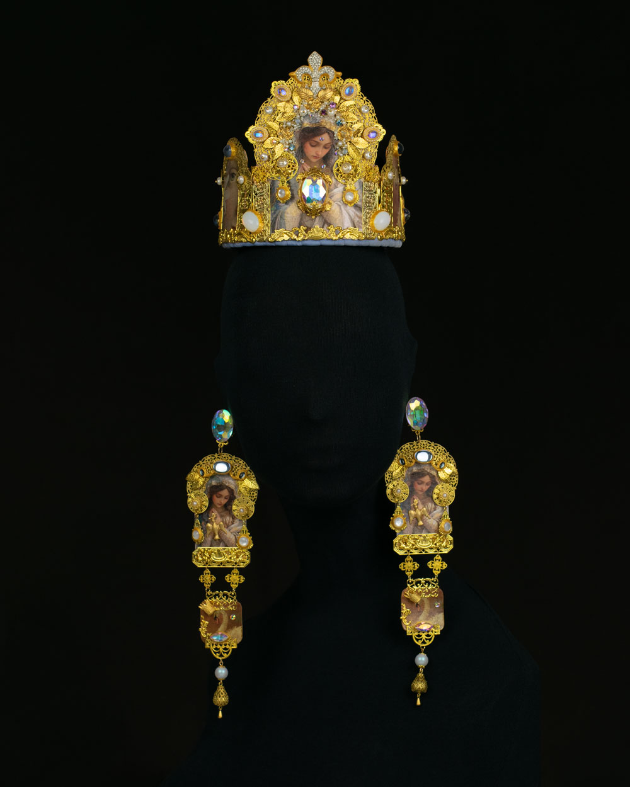
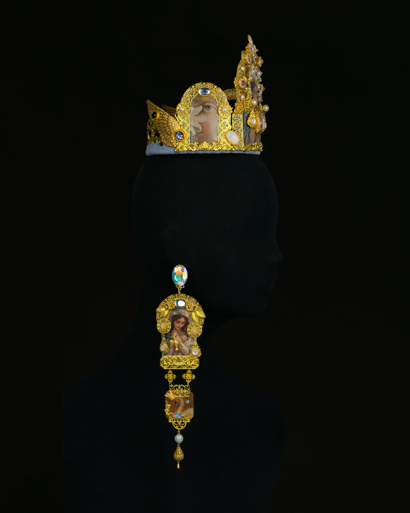
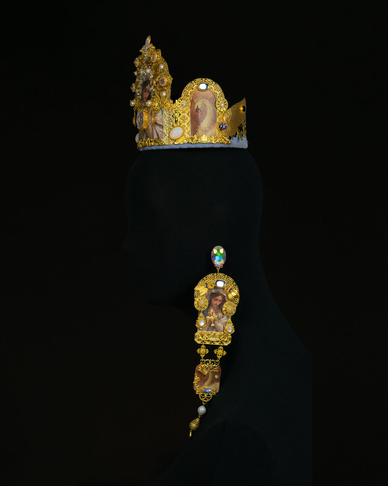

Byzantine-Influenced Transformer Crown “Procession of One”
Every queen must be crowned — but this is not about power. It is about remembering.
This Crown was not designed. It was summoned — from Orthodox icons, from centuries of sacred gold that never stopped glittering in my mind.
To wear this crown is not to pretend to royalty.
It is to remember that beauty itself is sovereign.
Stylized Ceremonial Headpiece · One of a Kind · Paris 2026
Transformer parure comprising the crown and its detachable pendilia, convertible into extra-long earrings.
Two ways to wear the same parure — crown with pendilia, or crown paired with extra-long earrings
Measurements:
Crown: H=14 cm, D=13 cm (circumference 44.5 cm)
Pendilia: H=23 cm, L=5 cm
Techniques used: Mixed media
Description of materials:
A mix of genuinely vintage and contemporary findings — brass and gold-tone filigree, glass and epoxy cabochons, rhinestones, an assortment of pearls (metallic, plastic, and freshwater), mother-of-pearl. The paper imagery is hand-treated to replicate the surface of aged paintings, with a crackled, time-worn patina.